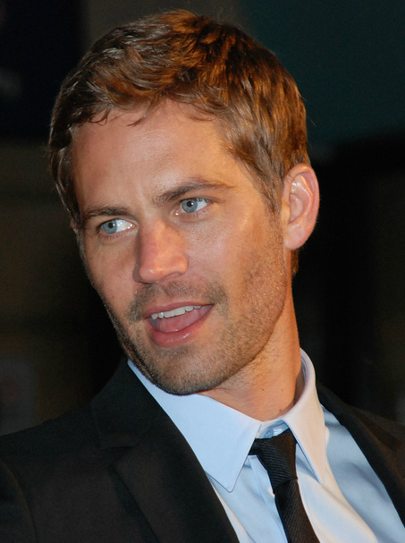

Vin Diesel
Mark Sinclair[1] (born July 18, 1967), better known by his stage name Vin Diesel, is an American actor, producer, director, and screenwriter. After featuring in the epic war film Saving Private Ryan (1998), he rose to international fame with his role as Dominic Toretto in The Fast and the Furious franchise.Diesel began his career in 1990, but initially struggled to gain roles until he wrote and produced the short film Multi-Facial (1995), which attracted the attention of director Steven Spielberg, who was developing Saving Private Ryan. Spielberg re-wrote elements of the film to allow Diesel to feature, which helped kickstart his career. He subsequently voiced the title character in The Iron Giant (1999), and gained a reputation as an action star after starring in The Fast and the Furious, The Chronicles of Riddick, and in the XXX series.Later in his career, Diesel also gained notoriety for lending his voice to the character of Groot in Guardians of the Galaxy, as well as in the Marvel Cinematic Universe, and for the animated film Ralph Breaks the Internet(2018). He also founded the production company One Race Films, which has produced a number of his star vehicles. Away from action films, Diesel has enjoyed commercial success in a number of other genres, such as in the comedy film The Pacifier (2005), while his performance in Find Me Guilty (2006) was praised.Diesel was born Mark Sinclair in Alameda County, California, with his fraternal twin brother, Paul.[2][3] His mother, Delora Sherleen (Sinclair) Vincent, is an astrologer.[4][5] Diesel has stated that he is "of ambiguous ethnicity".[6] His mother's background includes English, German, and Scottish.[7] He has never met his biological father, and has stated that "all I know from my mother is that I have connections to many different cultures".[8] Diesel has self-identified as "definitely a person of color",[9] and has stated that his parents' relationship would have been illegal in parts of the United States due to anti-miscegenation laws.[10]
Paul Walker
 Paul William Walker IV[3] (September 12, 1973[4] – November 30, 2013) was an American actor and philanthropist. He is best known for his role as Brian O'Conner in The Fast and the Furious franchise.Walker begun his career as a child actor in the 1970s and 1980s, but first gained recognition in the early 1990s after featuring in the television soap opera The Young and the Restless. He soon transitioned into film, and received praise in 1999 for his performances in the teen films She's All That and Varsity Blues, which helped kickstart his career. Walker then gained international fame after starring in The Fast and the Furious.He subsequently gained commercial success in a number of other action and thriller films, enjoying critical praise for his performances in Joy Ride (2001), Into the Blue (2005), and Running Scared (2006). Walker also enjoyed critical and commercial success in other genres, such as for the survival drama Eight Below (2006), and the war film Flags of Our Fathers (2006).Later in his career, Walker featured as a presenter for the marine biology series Expedition Great White[5] and became known for his philanthropic efforts, founding the disaster-relief charity Reach Out Worldwide (ROWW) in 2010.[6]Walker died on November 30, 2013, at the age of 40 as a passenger in a single-car crash alongside friend and driver Roger Rodas. Walker's father and daughter filed separate wrongful death lawsuits against Porsche, which resulted in settlements. At the time of his death, Walker hadn't completed filming for Furious 7 (2015), and it was delayed for rewrites. The song "See You Again", performed by Wiz Khalifa and Charlie Puth, was commissioned for the Furious 7 soundtrack as a tribute to Walker.[7]Walker was born in Glendale, California, and was the son of Cheryl (née Crabtree), a fashion model, and Paul William Walker III, a sewer contractor and boxer who was a two-time Golden Gloves champion.[8][9][10] Paul's paternal grandfather had a boxing career as "'Irish' Billy Walker". Paul's ancestry was mostly English, with some German, Swiss, and Irish.[11]
Mayte Michelle
Mayte Michelle Rodriguez[1] (born July 12, 1978)[2][3] is an American actress. Her breakout role was as a troubled boxer in the independent film Girlfight (2000), which was met with critical acclaim and earned her several awards, including the Independent Spirit Award[4] and Gotham Award for Best Debut Performance.[5] The following year, she starred as Letty Ortiz in the blockbuster film The Fast and the Furious (2001), a role she has reprised in five additional films in the Fast & Furious franchise. During her career, Rodriguez has played in a number of successful action films, including Resident Evil, S.W.A.T., and Avatar.Rodriguez also branched into television, playing Ana Lucia Cortez in the second season of the television series Lost. She has also had numerous voice work appearances in video games such as Call of Duty and Halo, and lent her voice for the 3D animated film Turbo and the television series IGPX.[6] With her films grossing over $5 billion (U.S.) collectively, a 2013 Entertainment Weekly article described Rodriguez as "arguably the most iconic actress in the action genre, as well as one of the most visible Latinas in Hollywood".[7]Rodriguez was born in San Antonio, Texas.[8][3] Her mother, Carmen Milady Rodriguez (née Pared Espinal),[a] is Dominican, and her father, Rafael Rodriguez, was a Puerto Rican, who served in the U.S. Army.[9][3][10] Rodriguez moved to the Dominican Republic with her mother when she was eight years old and lived there until age 11. Later, she moved to Puerto Rico until the age of 17, and finally settled in Jersey City, New Jersey. She dropped out of high school, but later earned her GED.[11] In total, she was expelled from five schools.[12] She briefly attended business school before quitting to pursue a career in acting, with the ultimate goal of becoming a screenwriter and director.[13]
Dwayne Johnson
 Dwayne Douglas Johnson (born May 2, 1972), also known by his ring name The Rock, is an American actor, producer, and semi-retired professional wrestler.Johnson was a college football player for the University of Miami, with whom he won a national championship in 1991. He initially aspired to a professional career in football, but was cut by the Calgary Stampeders of the Canadian Football League (CFL) and began training as a professional wrestler in the summer of 1995.[7]in 1996, Johnson secured a contract with the WWE when it was known as the World Wrestling Federation (WWF) and was promoted as the first third-generation wrestler in the company's history as he is the son of Rocky Johnson and grandson of Peter Maivia. He rose to prominence after developing a charismatic persona of a boastful trash-talking wrestler named The Rock. He subsequently won his first WWF Championship in 1998 and helped usher the WWF into the "Attitude Era", a boom period in the company's business in the latter 1990s and early 2000s which still hold professional wrestling records for television ratings.[8] In 2004, he left the WWE to pursue an acting career and went on a seven-year hiatus before returning in 2011 as a part-time performer until 2013.Considered to be one of the greatest professional wrestlers and biggest draws of all-time,[9][10] The Rock headlined the most bought professional wrestling pay-per-view event, WrestleMania XXVIII, and was featured in some of the most watched WWE Raw and WWE SmackDown television episodes ever.[11][12] He has won several championships in his career, being a two-time Intercontinental Champion, a five-time tag team champion, and a ten-time world champion.[13] He was also a Royal Rumble match winner and WWE's sixth Triple Crown champion.Johnson has also attained success as an actor, producer, and writer.[14][15] In 2000, he released an autobiography titled The Rock Says... which debuted at number one on The New York Times Best Seller list.[16][17] Johnson played his first lead acting role in The Scorpion King (2002) and went on to star in numerous other films, including The Rundown (2003), The Other Guys (2010), Moana (2016), and Jumanji: Welcome to the Jungle (2017). His most successful box office role has been a recurring role as Luke Hobbs in The Fast and the Furious movies, helping it become one of the top-grossing film franchises in history.[18] In 2012, he founded his production company, Seven Bucks Productions, which has since produced several films.[19] Consistently ranked among the world's highest paid actors,[20] Johnson made the Time 100 Most Influential People in the World list in both 2016 and 2019.[21][22]
Dwayne Douglas Johnson (born May 2, 1972), also known by his ring name The Rock, is an American actor, producer, and semi-retired professional wrestler.Johnson was a college football player for the University of Miami, with whom he won a national championship in 1991. He initially aspired to a professional career in football, but was cut by the Calgary Stampeders of the Canadian Football League (CFL) and began training as a professional wrestler in the summer of 1995.[7]in 1996, Johnson secured a contract with the WWE when it was known as the World Wrestling Federation (WWF) and was promoted as the first third-generation wrestler in the company's history as he is the son of Rocky Johnson and grandson of Peter Maivia. He rose to prominence after developing a charismatic persona of a boastful trash-talking wrestler named The Rock. He subsequently won his first WWF Championship in 1998 and helped usher the WWF into the "Attitude Era", a boom period in the company's business in the latter 1990s and early 2000s which still hold professional wrestling records for television ratings.[8] In 2004, he left the WWE to pursue an acting career and went on a seven-year hiatus before returning in 2011 as a part-time performer until 2013.Considered to be one of the greatest professional wrestlers and biggest draws of all-time,[9][10] The Rock headlined the most bought professional wrestling pay-per-view event, WrestleMania XXVIII, and was featured in some of the most watched WWE Raw and WWE SmackDown television episodes ever.[11][12] He has won several championships in his career, being a two-time Intercontinental Champion, a five-time tag team champion, and a ten-time world champion.[13] He was also a Royal Rumble match winner and WWE's sixth Triple Crown champion.Johnson has also attained success as an actor, producer, and writer.[14][15] In 2000, he released an autobiography titled The Rock Says... which debuted at number one on The New York Times Best Seller list.[16][17] Johnson played his first lead acting role in The Scorpion King (2002) and went on to star in numerous other films, including The Rundown (2003), The Other Guys (2010), Moana (2016), and Jumanji: Welcome to the Jungle (2017). His most successful box office role has been a recurring role as Luke Hobbs in The Fast and the Furious movies, helping it become one of the top-grossing film franchises in history.[18] In 2012, he founded his production company, Seven Bucks Productions, which has since produced several films.[19] Consistently ranked among the world's highest paid actors,[20] Johnson made the Time 100 Most Influential People in the World list in both 2016 and 2019.[21][22]
Jordana Brewster
Jordana Brewster (born April 26, 1980)[1] is an American actress and model. She made her acting debut in an episode of All My Children in 1995 and next took on the recurring role as Nikki Munson in As the World Turns, garnering a nomination for Outstanding Teen Performer at the 1997 Soap Opera Digest Award. Her first role in a feature film was in Robert Rodriguez's horror science fiction The Faculty (1998).Her breakthrough came with her role of Mia Toretto in the action film The Fast and the Furious (2001). She reprised the role in its sequels, Fast & Furious (2009), Fast Five (2011), Fast & Furious 6 (2013), and Furious 7(2015). Other film credits include the drama The Invisible Circus (2001), the action comedy D.E.B.S. (2004) and the horror film The Texas Chainsaw Massacre: The Beginning (2006).Brewster starred on the TNT series Dallas from 2012 to 2014. She also had a five-episode arc as Denise Brown in the first season of the FX true crime anthology series American Crime Story (2016). She recently starred as Dr. Maureen Cahill on the Fox buddy cop action dramedy Lethal Weapon (2016–2018).